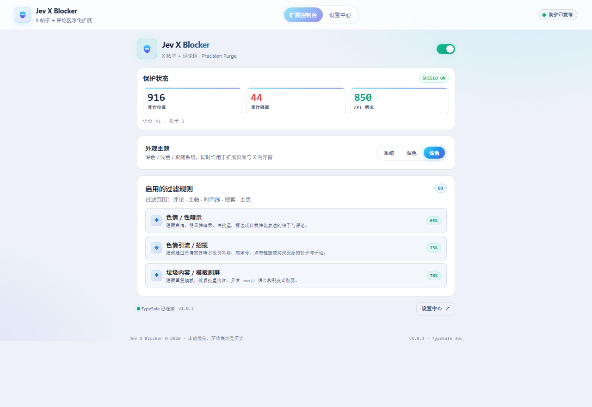
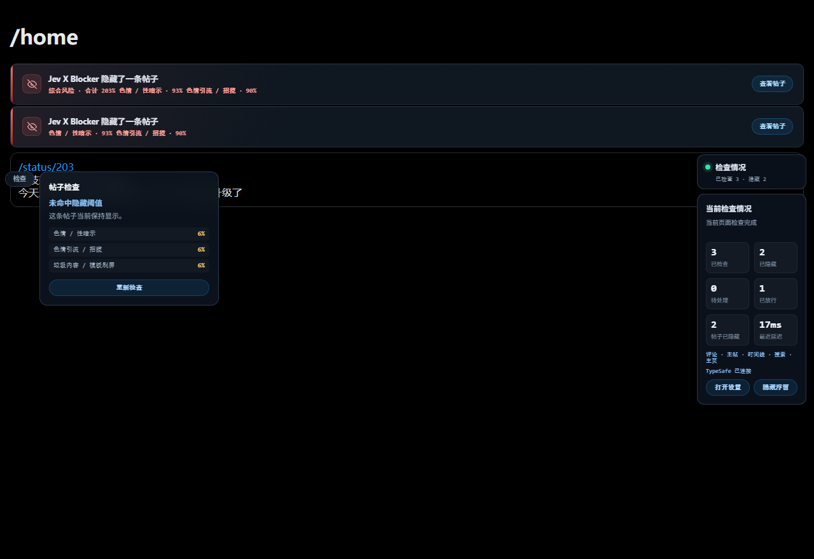
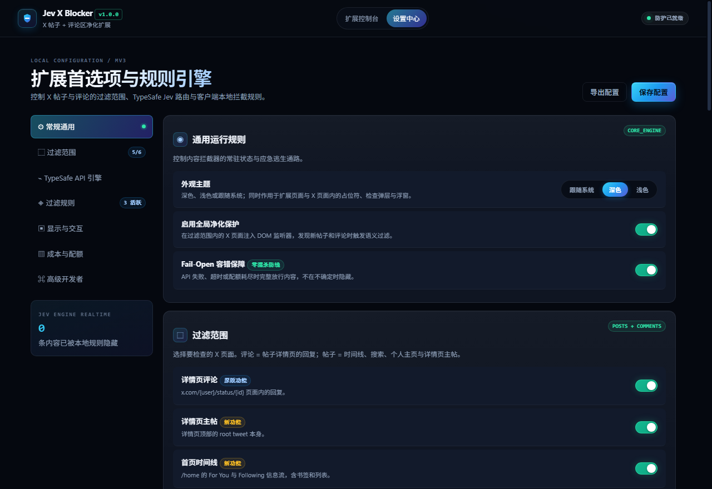

data-i18n-key="hero.h1" data-i18n-zh="把噪声留在视线之外。" data-i18n-en="Keep the noise out of sight."
More Signal, Less Noise, Better Living.
data-i18n-key="Semantic filtering of garbage and noise harassment on X with judgment models — not keyword matching. More accurate, more intelligent; rules in plain language; fast to the point of invisible. Porn, solicitation and flooding are just the first built-in rules — any garbage you want gone is one sentence away, and every hit is one click from restore.|hero.sub" data-i18n-zh="Semantic filtering of garbage and noise harassment on X with judgment models — not keyword matching. More accurate, more intelligent; rules in plain language; fast to the point of invisible. Porn, solicitation and flooding are just the first built-in rules — any garbage you want gone is one sentence away, and every hit is one click from restore." data-i18n-en="hero.su"



data-i18n-key="h2.features" data-i18n-zh="功能" data-i18n-en="Features"
data-i18n-key="f.dual.t" data-i18n-zh="帖子 + 评论双通道" data-i18n-en="Posts + replies, dual channel"
data-i18n-key="Detail replies, the detail root post, the home timeline (incl. bookmarks/lists), search results, profiles and explore — six independently toggleable scopes. Defaults: detail replies + home timeline; everything else is one toggle away.|f.dual.d" data-i18n-zh="Detail replies, the detail root post, the home timeline (incl. bookmarks/lists), search results, profiles and explore — six independently toggleable scopes. Defaults: detail replies + home timeline; everything else is one toggle away." data-i18n-en="f.dual."
data-i18n-key="f.lazy.t" data-i18n-zh="视口懒检查" data-i18n-en="Viewport lazy check"
data-i18n-key="Timeline posts are classified only as they approach the viewport — quickly scrolled posts cost zero API calls; repeats hit the local LRU cache (24h default).|f.lazy.d" data-i18n-zh="Timeline posts are classified only as they approach the viewport — quickly scrolled posts cost zero API calls; repeats hit the local LRU cache (24h default)." data-i18n-en="f.lazy."
data-i18n-key="chip.failopen" data-i18n-zh="data-i18n-key="f.failopen.t" data-i18n-zh="Fail-Open 容错" data-i18n-en="Fail-open safety"" data-i18n-en="Fail-open safety"
data-i18n-key="On API failure, timeout or exhausted quota everything stays visible — nothing is hidden on uncertainty.|f.failopen.d" data-i18n-zh="On API failure, timeout or exhausted quota everything stays visible — nothing is hidden on uncertainty." data-i18n-en="f.failopen."达到每日上限自动停止过滤。
data-i18n-key="f.local.t" data-i18n-zh="本地优先" data-i18n-en="Local-first"
API Key 只存浏览器本地、仅由 service worker 读取；评论文本直接发送 TypeSafe，不经过任何第三方服务器；不申请 tabs / history / cookies / webRequest 权限。
data-i18n-key="f.rules.t" data-i18n-zh="规则完全可定制" data-i18n-en="Fully customizable rules"
data-i18n-key="The built-in porn/innuendo, solicitation and template-flooding rules are just the first batch; thresholds are adjustable (0.5–0.99), custom natural-language rules are supported, and each rule can target replies only or posts only — any garbage you want gone is one sentence per rule.|f.rules.d" data-i18n-zh="The built-in porn/innuendo, solicitation and template-flooding rules are just the first batch; thresholds are adjustable (0.5–0.99), custom natural-language rules are supported, and each rule can target replies only or posts only — any garbage you want gone is one sentence per rule." data-i18n-en="f.rules."
data-i18n-key="f.theme.t" data-i18n-zh="深色 / 浅色 / 跟随系统" data-i18n-en="Dark / light / follow system"
data-i18n-key="The theme setting applies to extension pages and the placeholders, check popovers and panel inside X; the version is always visible.|f.theme.d" data-i18n-zh="The theme setting applies to extension pages and the placeholders, check popovers and panel inside X; the version is always visible." data-i18n-en="f.theme."
data-i18n-key="h2.install" data-i18n-zh="安装" data-i18n-en="Install"
data-i18n-key="Download Jev-X-Blocker-v1.1.0.zip (~76 KB) and unzip it into a Jev-X-Blocker folder.|s1.d" data-i18n-zh="Download Jev-X-Blocker-v1.1.0.zip (~76 KB) and unzip it into a Jev-X-Blocker folder." data-i18n-en="s1."
data-i18n-key="Enter chrome://extensions in Chrome (or edge://extensions in Edge) and turn on Developer mode.|s2.d" data-i18n-zh="Enter chrome://extensions in Chrome (or edge://extensions in Edge) and turn on Developer mode." data-i18n-en="s2."
data-i18n-key="Click "Load unpacked" and select the unzipped Jev-X-Blocker folder (manifest.json sits at the root).|s3.d" data-i18n-zh="Click "Load unpacked" and select the unzipped Jev-X-Blocker folder (manifest.json sits at the root)." data-i18n-en="s3."
首次data-i18n-key="h2.install" data-i18n-zh="安装" data-i18n-en="Install"自动打开引导页，填入你的 TypeSafe API Key 并测试连接。没有 Key 时插件保持放行，不会隐藏任何内容。